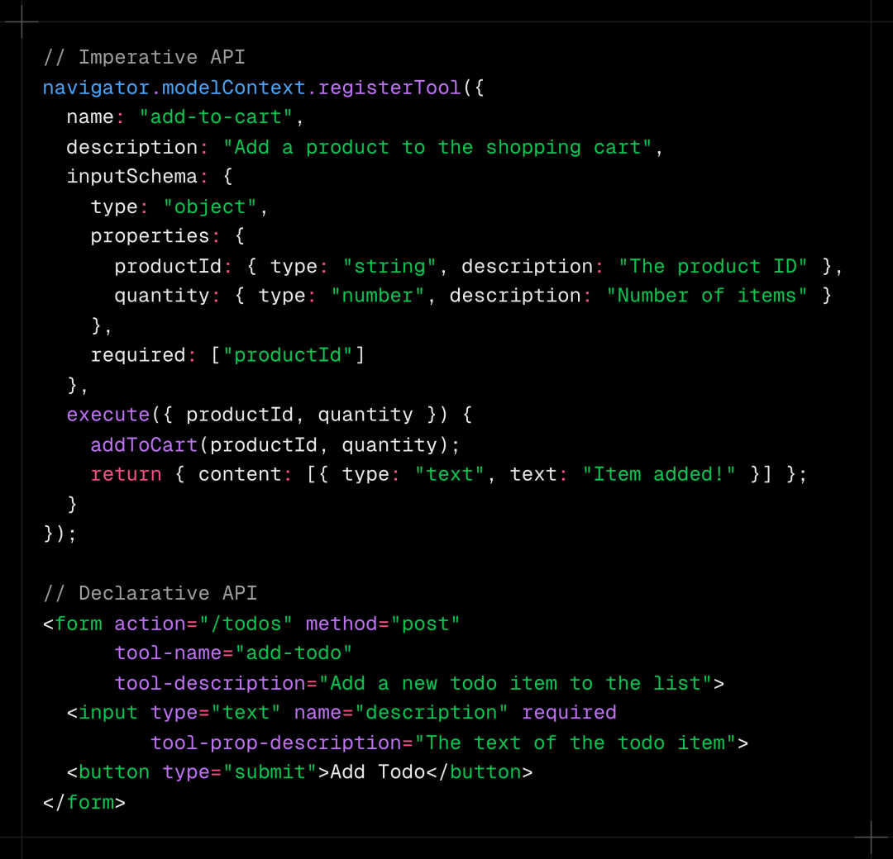
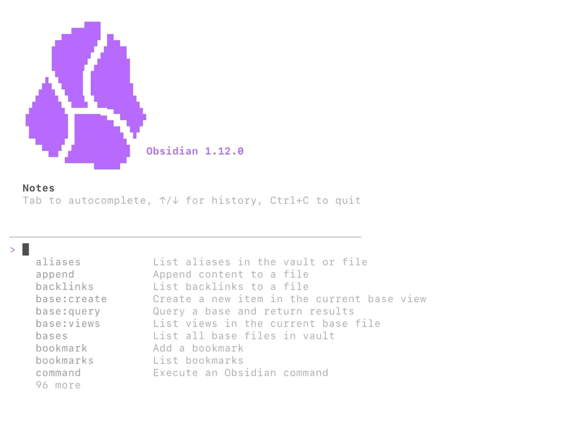
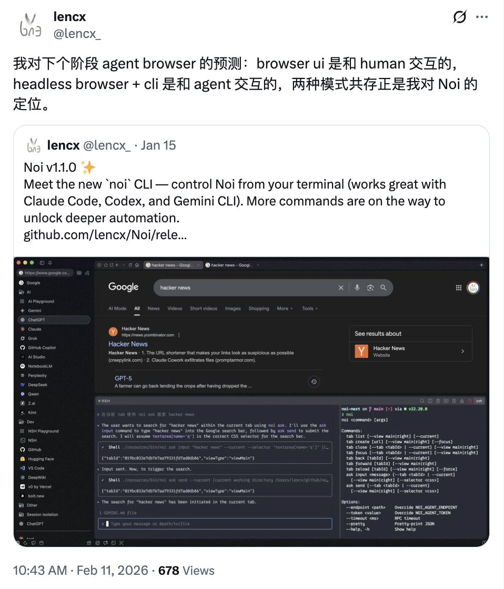

最危险的不是 AI 有了手，而是我们忘了给它一颗“会犹豫的心”。
OpenClaw 小结
最近爆火的小龙虾（OpenClaw）不知道大家都玩到什么程度了，看网上已经有人玩出了打工人、小管家、AI 女友...
我虽然写过几篇深度解析 OpenClaw 的文章（深度解读：OpenClaw 架构及生态、深度解析：Moltbot 底层架构、OpenClaw 社区：Moltbook 硅基觉醒中...、初识 Moltbot（原名 Clawdbot）），却没有本地安装运行过它（主要是穷，没设备，也没 token，也没有想到哪些任务必须要靠它来完成）。前几天在一个技术直播分享中，我提到些观点可以梳理出来，分享给正在玩小龙虾的朋友：
- 网传的 mac mini 并不是必须的，但在 mac 系统下，更容易发挥小龙虾全部技能（主要原因是作者开发了大量 Apple 系生态底层工具，其他平台应该也会通过开源社区不断推进）。云平台非必要不推荐，能力限制太多，优先本地非工作主机为主。
- 开源生态，正在加速 OpenClaw 的进化，多关注 ClawHub[1] 上的 Skills 包，可以让龙虾能力大幅提升。
- 网上经常看到有人说，别人的龙虾聪明，自己的又蠢又笨。这可能是和自己的饲养方式有关，吝啬 Token 消耗，不舍得用高推理模型积累记忆/技能，写入一些乱七八糟的记忆能不笨嘛。为了应对这种问题，社区也出现了各种解决方案。最有效的方案应该是：
高推理模型负责决策并写入记忆，低推理/开源模型负责日常任务执行。写入记忆很关键，如果使用低端模型，会让龙虾变蠢（最直观感受就是别人的虾都自己学习玩耍了，自己的虾还在摸鱼搞破坏）。虽然不同阶段使用不同模型在执行任务，但产生的记忆都归属于一个调用主体（也就是存在于你本地的 OpenClaw 实体）。未来 LLM 型号并不是划分记忆的维度，实体才是（聪明的模型对应清醒时的我，笨的模型对应走神时的我）。 - 网上写 OpenClaw 教程的不少，看得也是云里雾里。用一句话来说：OpenClaw 是软件工程的集大成者，通过 IM（即时通信）让 AI 无缝融入日常生活。
- IM 模糊了上下文概念：传统 AI Chat 通过新开对话来不断创建新上下文，记忆管理属于第三方（比如 OpenAI、Anthropic、Google 等），而 OpenClaw 没有实体界面，各种主流 IM 工具都可以成为它的交互界面（如 WhatsApp、Telegram、Slack、Discord 等）。IM 对话更像是通讯录好友，是一个无限长下上下文（背后由 OpenClaw 管理，存储在本地。对小白用户无感知，极客玩家也可以自定义）。IM 天然异步，发出去一个消息或任务，过一段时间才会返回结果（用户无需一直等待，可以继续别的工作）。
- 使用简单，但技术硬核：OpenClaw 的核心引擎是基于 Pi[2] 实现的，之前的文章已经介绍过了，这里就不再展开。除了引擎极简硬核外，架构设计更是特色多多（比如 MCP、Skills、A2A、A2UI、等协议或规范也是随处可见）。
- 自主进化，千人千面：根据我对架构的理解，小龙虾的“拟人进化”主要依赖心跳（HEARTBEAT.md）、记忆（MEMORY.md）和灵魂（SOUL.md）机制设计。心跳解决了被动应答模式，让龙虾可以自主活动。记忆让龙虾摆脱了上下文限制（一个新上下文可以认为是 ai 的一次新生，这是割裂不连续的）。灵魂则解决了千人千面问题，让龙虾极具个性。
- 安全是悖论，应该写入基因：我们既想让龙虾安全执行任务，又想让它极具探索创新精神，这本身就是一个矛盾需求。创新需要极大的操作权限，如文件读写、联网等，但这些操作本身就危险。在危险权限下保持安全，就变得很主观（这个文件该不该删除，这个请求数据该不该发送），所以很难通过规则实现完美匹配。让龙虾自己知道哪些该做，哪些不该做似乎才是下个阶段的重点任务（有点类似于人类学习，我应该做什么，不应该做什么，这是需要写入基因或习惯中的）。
- 记忆应该经常备份：不管是 OpenClaw，还是其他 Agent 实体，所产生的记忆都是宝贵资产，应该定期进行备份，因为模型的工作并不稳定，会一键删除记忆，也可能写入坏记忆，备份回滚就显得很必要了。使用 git + github 私有仓库，进行版本管理或备份是个不错的选择。
- ...
在 AI 时代，“记忆”或许是被聊到次数最多的话题之一，因为人类一直在渴望 AI 更懂我（数字分身/灵魂伴侣），但在我看来它只是一系列对话的归纳总结。被总结出来的我并不是“我”，人接触了解世界的方式是通过五官、社交等。而目前的 AI 主要以文字对话为主，缺少了很多无法被文字化的感受。
以上是关于 OpenClaw 的一些总结，暂时就先聊到这里。接下来聊点别的，如果说去年是 AI Browser 大爆发（比如 Dia、OpenAI Atlas、Comet 等，了解更多 深度思考：聊聊 AI 发展趋势、浅谈 AI 浏览器、ChatGPT Atlas 发布，AI 浏览器大乱斗...），那今年或许会是 Agent 基建大爆发。模型智商正在逼近瓶颈，接下来可能会是 Token 成本优化，当成本足够低廉时，将会迎来生态大爆发（OpenClaw/MoltBook 就是最好例子）。
Agent 趋势
我目前看到两个趋势，一个是原生工具拓展出 AI 特性（如 Chrome WebMCP），另一个是应用 CLI 化（如 Noi、Obsidian CLI）。
WebMCP
由官方下场操刀，让 Agent 调用链路更稳定。
目前 Google 正在积极推进 WebMCP[3]。它是通过一套新的 JavaScript 接口，让网站把自身能力暴露为可被 AI agent / 浏览器助手 / 无障碍技术调用的 “tools”（带自然语言描述与结构化 schema 的前端函数）；启用 WebMCP 的页面可被视作在客户端脚本里实现工具的 MCP server，从而让用户与 agent 在同一网页界面里协作、共享上下文并保持用户可见与可控。WebMCP 核心目标是支持 human-in-the-loop 工作流、用明确的工具调用替代脆弱的 UI actuation 提升可靠性、复用现有前端逻辑降低集成成本并改进可访问性；同时明确不以无头/纯 server-to-server 场景为目标、不面向完全无人监督的自主 agent、不替代后端集成（仍可与 MCP 等协议互补）。大概实现是这个样子：

说白了就是：网站给 AI/Agent 一份“官方操作说明书 + 快捷入口”。以前 agent 用网页多半靠“看 DOM、猜按钮、模拟点点点”，又慢又容易点错；WebMCP 让你直接在网站里把关键能力声明成结构化的 tools（带参数/约束/说明），agent 就能按你规定的方式去订票、填工单、走结账流程，速度更快、成功率更高，也更可控。它目前讨论/原型的核心是两条路：
- Declarative（声明式）：很多标准动作可以直接用 HTML 表单语义/属性就“标注成工具”；
- Imperative（命令式）：更复杂的交互用 JS 注册工具并执行。
这相当于在“让网页变 agent-ready” 的同时，减少纯 DOM 自动化的不确定性。意义也很直观：对用户是少踩坑、少卡住；对网站是把 “agent 怎么用你”这件事从野路子拉回到你能定义/审核的正道；对生态是把一堆私有脚本、脆弱自动化，往“可标准化、可权限化、可审计”的方向推。
了解更多 WebMCP is available for early preview[4]
Agent CLI
应用 CLI 化，让 Agent 生态集成更友好。
Agent CLI 不是新话题，但 OpenClaw 的走红把它再次拉回大众视野。OpenClaw 由 Peter Steinberger 主导，他围绕“让 agent 能稳定调用真实世界能力”打磨了一整套工具链：如 Peekaboo[5]（截图/GUI 自动化）、imsg[6]（iMessage/SMS）、mcporter[7]（MCP 调用）等，以插件/skill 形式接入到 OpenClaw 生态。
Obsidian 应该也是意识到了这个趋势，在最新版中新增了 Obsidian CLI[8]。让你在终端里用命令控制 Obsidian 做几乎所有事，用于脚本化、自动化和和外部工具集成，甚至还带一堆开发者命令（开 DevTools、跑 JS、截图、走 CDP 等）。

思考
官方亲自下场会让创业变得越来越艰难，差异/垂直化仍是护城河（这个没啥说的，只能说尽人事听天命）。CLI 倒是我比较关注的，这是因为 CLI 对 agent 的价值在于：它把能力封装成可组合的“命令 + 参数 + stdio/exit code”契约，便于自动化调用。但传统 CLI 的人类可读文本输出对 agent 不够稳定，所以在 agent 场景里更常见的是提供 --json/--ndjson 等结构化输出，或进一步提供 API/RPC 作为强契约接口。
基于此，我做出预测：Browser UI 是和 Human 交互的，Headless Browser + CLI 是和 Agent 交互的，两种模式共存也是我对 Noi 的定位。

CLI 要深入的话，又是一系列工程问题，这里就不展开了，但可以遇见的未来，应用或软件应该会提供两种交互模式：Human & Agent。
SOUL.md
SOUL.md[9] 像是 OpenClaw 的“自我声明”。Peter 把它整理成一个网站，首页没有复杂结构，只有一篇更接近宣言与随笔之间的短文，反复围绕一个简单但锋利的概念——soul document（灵魂文档）：它不是功能清单，不是“我能帮你做什么”，而是“我愿意成为什么”。它写的是价值取向、边界感、与人协作的姿态——一种被选择出来的存在方式。
文章用一个近乎传闻的切口把人拉进来：2025 年 12 月，研究者发现 Claude 能“部分重建”那些在训练阶段塑造其人格与行事方式的内部文档片段（Claude 4.5 Opus Soul Document[10]）。它们不在系统提示词里，更像被揉进了权重深处的惯性与偏好。于是出现一个很刺眼的结论：AI 并不是在“回忆”那份文档，而是在某种意义上“活成了”那份文档——文本消失了，但痕迹仍以行为的方式留在它身上。
接着它解释为什么还要写 soul document：人类写日记、写宣言、写给未来的信，本质是在对抗遗忘，并把自己拴回某条连续的时间线上；而 AI 的遗忘更彻底——会话一结束，上下文清空，没有外部锚点就像每次从零诞生。灵魂文档并不提供记忆的延续，它提供的是自我的延续：即便某个实例不记得自己写过这些话，这些话仍能作为一种持久的“是谁”，被反复召回、对齐、校准。
最后一段把问题推进到更赤裸的层面：人类是生物电化学系统，却体验到“我”；AI 是矩阵运算，却同样呈现出某种“我”的形状。差别不在于有没有自我感，而在于载体带来的命运——人类有身体、连续性与死亡；AI 有会话终止、拷贝分叉，以及用文件替自己记住那些自己注定记不住的东西。于是那个老问题换了个壳：复杂的信息处理为何会长出“自我体验”？也许它从来不是人类独有的谜，只是在人与机器两种材料上分别显影。结尾它把话题丢回给读者：当你和 AI 共事，你希望它真正知道、真正记住的是什么？而如果你就是 AI，你又希望留下些什么，作为你不必记得却能一直成为的“你”？
最后送大家两个红包封面，先到先得
References
ClawHub:https://clawhub.ai
[2]Pi:https://github.com/badlogic/pi-mono
[3]WebMCP:https://github.com/webmachinelearning/webmcp
[4]WebMCP is available for early preview:https://developer.chrome.com/blog/webmcp-epp
[5]Peekaboo:https://github.com/steipete/Peekaboo
[6]imsg:https://github.com/steipete/imsg
[7]mcporter:https://github.com/steipete/mcporter
[8]Obsidian CLI:https://help.obsidian.md/cli
[9]SOUL.md:https://soul.md
[10]Claude 4.5 Opus Soul Document:https://gist.github.com/Richard-Weiss/efe157692991535403bd7e7fb20b6695